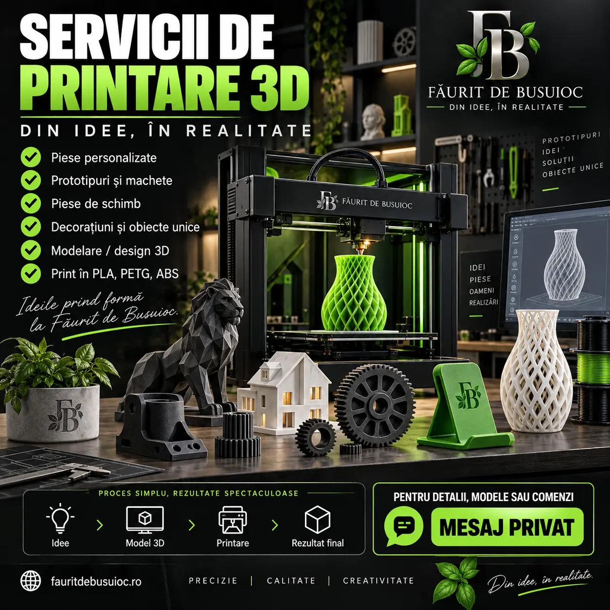
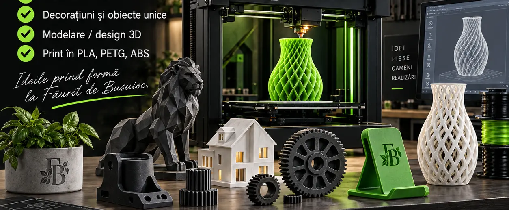
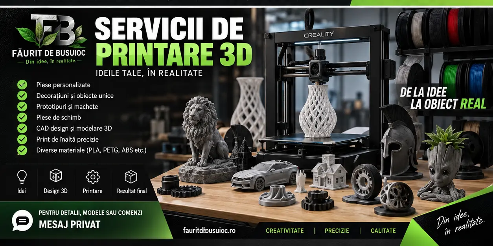

Piese personalizate
Componente mici realizate după dimensiuni sau model.
Transformăm un model digital într-un obiect real, construit strat cu strat: de la piese practice și suporturi până la prototipuri, decorațiuni și creații unicat.

Fiecare proiect este verificat separat în funcție de dimensiune, formă, rezistență și utilizare.
Componente mici realizate după dimensiuni sau model.
Alternative pentru elemente simple care nu se mai găsesc.
Pentru telefon, scule, cabluri, birou sau atelier.
Modele de test înaintea unei producții sau construcții finale.
Figurine, vaze, litere, nume, logo-uri și obiecte creative.
Trimiți poza, schița sau explicația, iar noi verificăm dacă poate fi realizată.

Printarea 3D este potrivită pentru obiecte greu de găsit, modele personalizate și proiecte unde forma trebuie adaptată exact ideii tale.
Măști, obiecte decorative și modele realizate strat cu strat, de la fișier digital la produsul final.
Apasă pe orice fotografie pentru vizualizare mărită.
O fotografie, o schiță, dimensiunile sau un model 3D existent.
Analizăm forma, dimensiunea, materialul și utilizarea obiectului.
Folosim modelul primit sau discutăm realizarea unuia potrivit.
După aprobare, imprimanta îl construiește strat cu strat.
Dacă ai deja un fișier 3D, îl verificăm înainte de printare. Dacă ai doar o poză sau o schiță, analizăm ce trebuie modelat și îți spunem clar ce este realizabil.
Prețul depinde de dimensiuni, complexitatea modelului, cantitatea de material și timpul de printare.

Poze clare, dimensiuni, cantitate și explicația modului în care va fi folosit obiectul.
Fezabilitatea, materialul potrivit și limitele piesei. Componentele pentru sarcini mari, temperaturi ridicate sau utilizări critice necesită evaluare separată.
Trimite o fotografie, o schiță sau fișierul 3D împreună cu dimensiunile. Primești răspuns despre posibilitatea de realizare și ofertă.
Oferta se stabilește după verificarea modelului, dimensiunilor și utilizării obiectului.